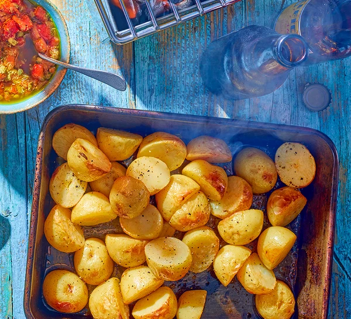

Smoky Potatoes Recipe

A light and flavoursome snack
New Potatoes cooked with a smoky flavour, you can keep them whole or cut in half. Perfect for a summer afternoon on the barbeque.
Ingredients
- 800g new potatoes, halved
- 1/2 tsp smoked paprika
- 25g butter
- 1 small garlic clove crushed
Method
- Tip the potatoes into a large pan of salted water and bring to the boil. Simmer for 5-8 mins until just cooked through,
then drain. Return to the pan.
- While the potatoes are still steaming, toss in the paprika, butter, crushed garlic and a large pinch of salt, then
serve. Or, for added smokiness, tip the potatoes onto a large piece of foil or into a flameproof pan. Scrunch the foil
to create a parcel that’s open at the top, then sit it on the side of the barbecue in indirect heat so the potatoes
sizzle in the butter. If the barbecue has a lid, close it and cook the potatoes for 15-20 mins until starting to turn
golden (this adds smoky flavour – don’t worry, the potatoes will not overcook), then serve from the parcel or pan.
Return to front page